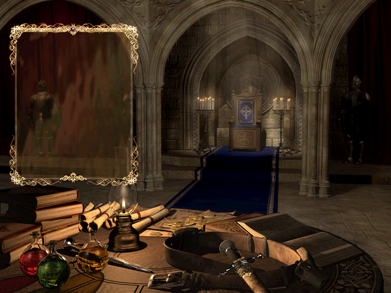
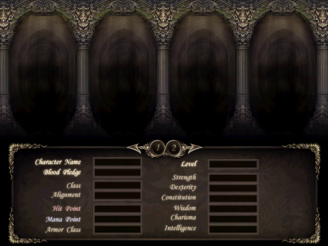
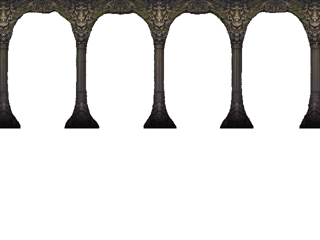
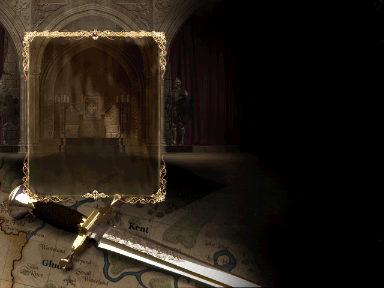

效果較弱/卡頓的裝置可關閉戰鬥特效；「傷害數字」可獨立關閉、其餘特效保留（開始前設定，遊戲中不再提供）


放置天堂 - 灌充手的逆襲
創造您的角色並開始冒險
v4.0.01
本遊戲為非官方免費同人作品，絕無營利意圖；遊戲內圖片與音樂版權歸原權利方 NCSOFT 所有，其餘程式為獨立開發，嚴禁商業販售。


Character Name
Blood Pledge
Class
Alignment
Hit Point
Mana Point
Armor Class
Level
Strength
Dexterity
Constitution
Wisdom
Charisma
Intelligence

王子
0
職業⚔經典 城主
城主
城主
等級1
AC10
MR0
金幣0
冒險地圖
目前擔任隊員中
銀騎士村
世界頻道
0
0
0
0
0
0
近距離傷害0
近距離命中0
近距離爆擊率0%
近距離爆擊傷害0%
遠距離傷害0
遠距離命中0
遠距離爆擊率0%
遠距離爆擊傷害0%
迴避率0%
HP恢復量0
藥水恢復量0%
傷害減免0
移動速度100%
攻擊速度1.0s
魔法傷害0
魔法命中0
額外魔法點數0
魔法爆擊率0%
魔法爆擊傷害0%
MP恢復量0
MP消耗減免0%
MP回復間隔16秒
魔法防禦0
無屬性抗性0
火屬性抗性0
水屬性抗性0
風屬性抗性0
地屬性抗性0
物品名稱🔓
物品說明